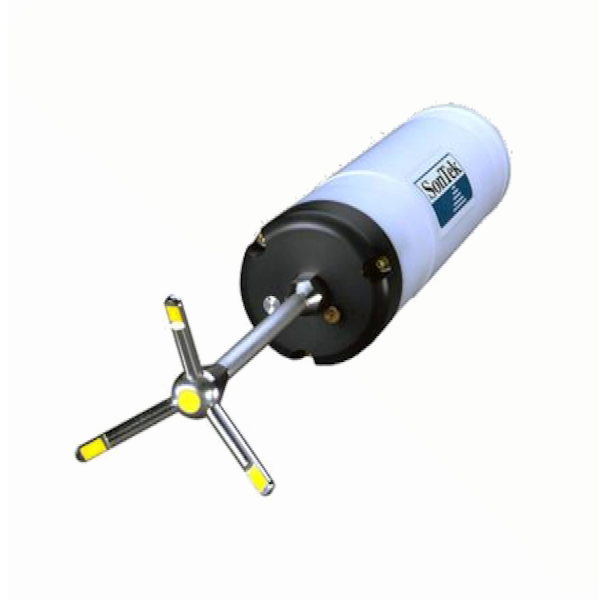

SonTek/YSI Triton Acoustic Doppler Velocimeter

| SonTek/YSI Triton Acoustic Doppler Velocimeter | |
|---|---|
| Location: | Lab. 0.2 Building 7 |
| Manager: | Margarida Ramires |
| Operator: | User |
| Operating Principle: | Doppler Acoustic Velocity Measurement |
| Manufacturer: | SonTek/YSI |
| Model: | Triton |
| Type: | Acoustic Doppler Velocimeter |
| Website: | Not Available |
SonTek/YSI Triton Acoustic Doppler Velocimeter (ADV), designed for high-resolution measurement of water velocity in aquatic environments. The instrument uses acoustic Doppler technology to measure three-dimensional water velocity and turbulence, making it suitable for laboratory and field applications involving rivers, estuaries, coastal waters, and other aquatic environments.
Main Applications
- Measurement of three-dimensional water velocity;
- Characterization of flow patterns and water circulation;
- Turbulence and hydrodynamic studies;
- River, estuary, and coastal water monitoring;
- Laboratory studies of fluid dynamics and sediment transport;
- Environmental and aquatic ecosystem research;
- Hydrodynamic characterization of natural and engineered water systems;
Main Advantages:
- High-resolution three-dimensional velocity measurements;
- Acoustic Doppler technology for accurate and non-intrusive measurements;
- Suitable for both field and laboratory applications;
- Measurement of flow velocity and turbulence characteristics;
- Compact and portable design for field deployment;
- High temporal resolution for detailed flow analysis;
- Suitable for measurements in complex and variable flow conditions;
- Reliable data acquisition for hydrodynamic and environmental studies;
Technical Specifications:
| Specification | Value |
|---|---|
| Manufacturer | SonTek/YSI |
| Model | Triton |
| Sampling Rate | 0.1 to 25 Hz |
| Sampling Volume | 0.25 mL |
| Dist. to Sampling Volume | 5 or 10 cm |
| Resolution | 0.01 cm/s |
| Programmable velocity range | 3, 10, 30, 100, 250 cm/s |
| Accuracy | 1% of measured velocity, 0.25 cm/s |
| Maximum Depth | 60 m |
| Standard Cable Length | 10 m |